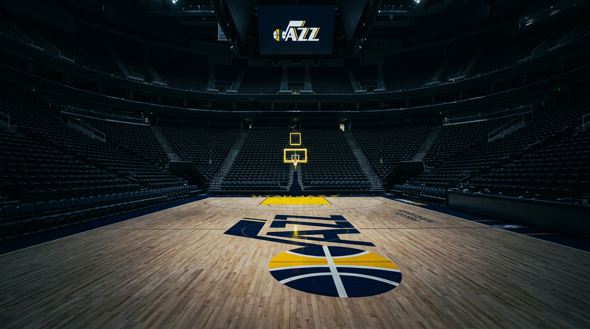

Michael Pina's article on The Ringer paints a picture of a Jazz lineup that blends height, spacing, and upside: Walker Kessler, Keyonte George, Lauri Markkanen, Jaren Jackson Jr., and Ace Bailey. This remix keeps the optimism but asks three harder questions, each backed by a different visualization.

The original article's central premise hinges on spatial distribution: Markkanen operates beyond the arc, JJJ attacks from the elbow and short corner, George creates off the dribble on the perimeter, Bailey utilizes the weak side, and Kessler anchors the low block. Theoretically, this limits offensive redundancy and maximizes half-court real estate.
Drilling deeper into the geometry, this configuration theoretically solves modern NBA spacing issues. Lauri Markkanen's elite perimeter gravity is the linchpin—he forces opposing power forwards out of the paint, creating massive, uncluttered driving lanes for Keyonte George and Ace Bailey. Meanwhile, Jaren Jackson Jr.'s ability to spot up from the corner or elbow prevents the dreaded "twin-tower" spacing collapse. Because JJJ can pull his defender away from the basket, Walker Kessler is left free to operate exclusively as an interior lob threat and offensive rebounder without clogging the lane for drivers.
This chart plots every recorded field-goal attempt for the five projected starters this season. Click any player chip to toggle visibility, or click a dot to inspect a single shot. Section 2's role chart can also drive focusing here.
Spacing alone doesn't win. A functional starting five needs floor spacing, rim pressure, shot creation, scoring load, rim protection, and shot versatility — without too much redundancy. The newly constructed Jazz roster presents a fascinating division of labor.
Each row below compares the five starters on these dimensions. The wider a player's bar, the higher their relative score on that metric (0–100, min-max normalized across the five players). Note: Because scores are relative, the lowest performer in each category receives a score of 0. Also, Walker Kessler and Jaren Jackson Jr. have significantly smaller sample sizes in this dataset, which naturally skews volume-based metrics downward for them.
Hover any bar for details. Click any bar to focus the shot map above on that player's relevant court zones — the view-coordination bridge between Sections 1 and 2.
Every compelling narrative has blind spots. While the original article acknowledges that Jackson "permanently resides in foul trouble," it mostly frames the roster construction as pure upside. However, the data points to three clear structural risks that could derail this paper puzzle:
Below, these three risks are rendered as simple bar comparisons so the structural imbalances are immediately visible.
While the data provides a snapshot of the present, the ceiling of this roster depends on internal development and future assets. Ace Bailey's trajectory is the ultimate x-factor. As he develops from a secondary connector into a reliable, high-volume two-way wing, he will bridge the structural gap between the backcourt and the bigs, elevating the Jazz from a fun experiment to a legitimate contender.
Looking ahead to the loaded 2026 NBA Draft, the Jazz front office is armed with draft capital and a clear blueprint. Given the structural risks identified above—particularly the playmaking bottleneck—the optimal move would be targeting a high-IQ, pass-first point guard to relieve Keyonte George of primary initiation duties. Alternatively, drafting another premium 3-and-D wing could provide vital insurance for the perimeter spacing and further solidify the intimidating defensive wall built by JJJ and Kessler.